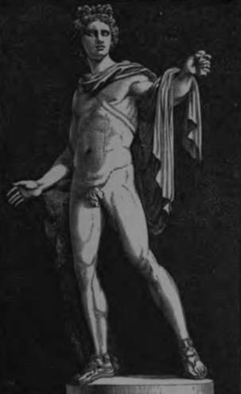
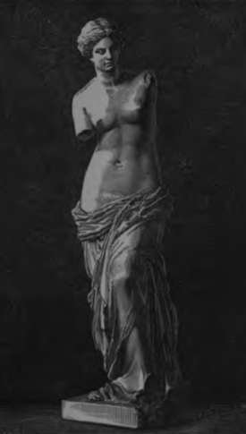

Chapter II. Form Of The Body Its Beauty
Description
This section is from the book "Wonders Of The Human Body", by Auguste Le Pileur. Also available from Amazon: Wonders of the Human Body.
Chapter II. Form Of The Body Its Beauty
Form of the body its beauty. The masterpieces which it has inspired. Description of the skin. its functions.
Nature, in modelling animals, has marvellously adapted their forms to the functions and to the mode of life to which she has destined them; but no creature has received in the same degree as man, that mingling of strength and of elegance in contour, of grandeur and delicacy in the lines, and in no other has she taken such care to distinguish the two sexes in bestowing upon them her most precious gifts. It is of the human race alone that Buffon could say: " Man has strength and majesty; beauty and the graces are the dowry of the other sex".
The fabulist, using the poet's privilege, makes the lion say— " Lions might hold the upper hand, If they but had the art to paint".
Doubtless in comparing himself with certain animals, man cannot ignore his inferiority in muscular strength and in the arms which nature has given him; but what matters it? He feels his superiority to these beings, though they are stronger and better armed than he. He knows how to avoid their attacks and to triumph over their brute force. He constrains them to his service, and disposes of their lives and of their bodies, by obeying not a blind instinct but the voice of reason. If he believes himself first among the dwellers on his planet, it is not his vanity which persuades, but his intelligence that proves it to him, and gives him the right to treat all other creatures as their master.
We admire the majestic bearing of a tree, the elegance of a flower, the plumage and flight of a bird, the stately tread of some huge mammal, but nothing impresses us so much as the human form. It is not from sympathy with beings of our own species that we find them more beautiful; the judgment that we pronounce upon their beauty is not due to the inclination of one sex to the other; this sympathy and this inclination are common to most of the superior animals, but man alone appreciates the difference between individuals as between species; it belongs to him only to class them according to their merits, and to distinguish perfection from deformity; he alone possesses the sentiment of the beautiful, that faculty which permits him to admire the Creator in his works, and gives him the right to place himself in the first rank of animated beings.
The plastic arts receive their most elevated inspirations from the human form, and it is to the efforts of painters and sculptors to reproduce it in its perfection that we owe the treasures of our museums. It is often said of these master-pieces that they are the ideal of beauty, but we are not to understand from that something superior to nature itself The artist may appreciate the relative beauty of the models which offer themselves to his eyes, but in ceasing to follow nature and in endeavouring to become her superior, he could only bring forth an imaginary product, a monstrosity. Anatomy should be his first study; if he forgets its precepts he becomes incorrect, like the musician who offends against the laws of harmony. The ideal is not therefore a form more perfect, it is the perfection of the natural form itself which the artist strives to attain, either by drawing inspiration from a single model, or by uniting in a single figure all the details which he has borrowed from different individuals. Far from seeking to surpass nature he feels that his hand is powerless to render completely the impression which his practised eye receives.
Within certain limits he may nevertheless exaggerate or weaken some detail of form, and that too without ceasing to imitate nature, who shows him in this manner how he may embody the character and the physiognomy. The painter and the sculptor therefore may rightly allow themselves a certain latitude in lines and proportions; it is a poetical license, analogous to that which allows a musician to obtain grand effects by momentary discords. To us then it seems that in questions of this nature the critic should proceed with a great deal of reserve. The right of the anatomist to point out an irregularity cannot be contested, and the artist should be warned that to genius alone can such be permitted; but even if we admit that all the criticisms addressed to painting or to sculpture in the name of the natural sciences are well founded, who could, in the presence of a master-piece, obstinately dwell upon a fault of detail?
Fig. 8. Apollo Belvedere.
Fig. 9. The Venus of Milo.
As regards the inspiration drawn from the human form, the beauty of Raphael's Madonnas and the admirable paintings of the Venetians impress us perhaps still more than statuary. Under the pencil of the great masters it is man himself that we see. What is more beautiful than the "Vierge a la Chaise," or than that "Violante" painted by Giorgione, of which Venice formerly possessed the glowing figure?
In sculpture the form alone is seen, painting adds the illusion of colour and the transparency of tone; the figures of the statuary have exactness in movement and flexibility of form, the painter vitalizes his creations, gives light and life to the eye, and makes the blood circulate through the skin, which he seems to steal from the living model.
The skin is a membraneous tissue, resistant and flexible, varying in density and thickness according to locality, which covers the whole body and completes the form by softening the contours. It adheres to, and is intimately united with, the subcutaneous cellular tissue by fibrous prolongations. At some points it receives aponeurotic insertions, as in the palm of the hand and the sole of the foot; at others, as on the neck, for instance, the muscular fibres are attached to the skin, and mingle with the fibres of its deeper layer. There are folds in the skin, sometimes temporary and at others constant, which result from the flexion of the parts or from the contraction of the muscles, becoming more marked with age, and more or less numerous and profound as the subject is inclined to leanness or to obesity.
Continue to: